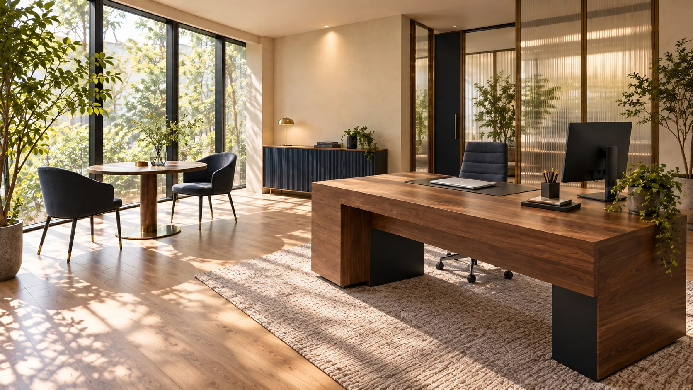
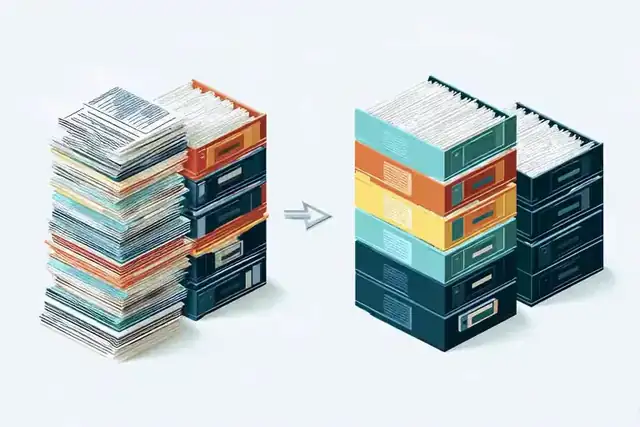
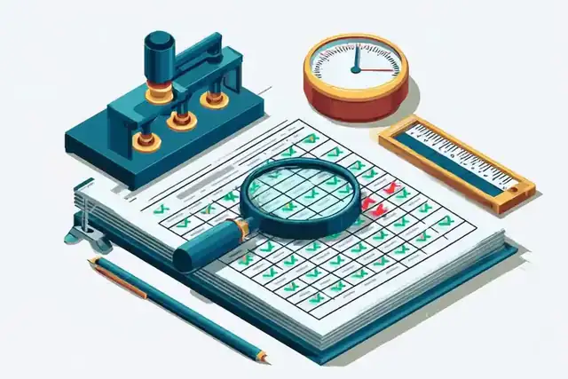

滋賀の経営者・事業責任者へ
AIで事務を減らし、
本業に向き合う時間を。
転記・集計や、文書・資料づくりに追われていませんか。
滋賀県愛荘町の合同会社Vaynexisが、日々の業務を整理し、AIの活用手順と結果の確かめ方を設計します。
無料相談は30分・1社1回。日時はお申し込み後に調整します。
営業や顧客対応に使える時間を増やすための業務改善です。文書や小さな自動化の制作にも対応。訪問は滋賀県内、オンラインは全国でご相談いただけます。
電話受付は平日10:00〜18:00（土日祝休）。無料相談は30分・1社1回、日時はお申し込み後に調整します。無料相談とデモの準備
入口の棚卸しは55,000円（税込）。料金と保証 ／ 実績と見本 ／ AI業務改善の支援内容
上の表示は、当社が自分の教材に対して2026年9月に行った検査の記録からの抜粋です。日付と件数は実測で、「差し戻し」は検査が誤りを見つけて直した回です。
まず1業務で、使える形を確かめる。
必要に応じて顧問へ
10日ほど試したあと、30分の振り返りで継続を判断。顧問料の基本式は時間×時給×50%。最低額と上限があります。月額の目安は、棚卸しのレポートで数字にしてお示しします。棚卸しだけでも構いません。
Office Work
事務時間を減らす、2つの取り組み。
転記・集計の手間を減らす
同じ情報の入力や、毎月の表の集計。作業の流れを棚卸しし、AIに任せる部分と人が確認する部分を整理します。必要に応じて小さな自動化も制作します。
転記・集計の実演：重複・件数・金額の照合文書・資料づくりの手間を減らす
報告書、議事録、マニュアルや説明資料。元の情報と完成形を整理し、作成・整形の手順を設計します。制作を引き受ける場合は、成果物と検査記録を一組でお渡しします。
議事録・資料作成の実演：決定・提案・出典の確認自社の制作・検査記録。noteの記事数は2026年10月18日の公開表示、教材・検査等の値は2026年9月の記録です。自社分の削減時間は実測していません。人手で行った場合の見込みは、推定と明記して実績のページに示します。最新の更新記録と数え方
Service
毎日の事務を、AIで減らす。
手が回らなかった文書を、AIで作る。
どちらも、本当に終わったかを確かめる。
Introduction
74秒でご説明します
- 当社が起こした失敗（領収書の整理で、2か月間1枚も保存されていなかった）
- AIが作った請求書20件を検査する実演（架空のデータ）
- 減らす・作る・確かめる、という仕事の形
- 無料相談から棚卸しへ、という始め方
要点は画面の文字でも読めます。再生ボタンを押すまで音は出ません。この動画の作り方と検査の結果は作る仕事の見本に書いています。
検査をつけないと、こうなります
当社がつける検査
AIを実務に入れた人が最初にぶつかる壁は、使い方ではなく「信用できるか分からない」ことです。実際に起きる事故は、止まることではありません。動いているように見えたまま、成果物が出ていないことです。
当社の仕事は2つです。いまある事務を3つに振り分け、AIに任せる仕事に「本当に終わったか」を確かめる検査をつけること。そして、人手が足りずに作れなかったマニュアルや資料を、AIで作って検査記録つきで納めること。


減らす 業務を3つに振り分ける
AIに任せられる
間違えてもすぐ分かる業務。議事録の下書き、問い合わせの一次返信、資料の要約。
気づくまで：数分検査をつければ任せられる
気づくのが遅い業務。請求書の作成、経費の仕分け、在庫の突合。ここが仕事の中心です。
気づくまで：数日〜月末人がやるべき
気づけない、または気づいたときには遅い業務。契約の判断、人事、取引先との交渉。
気づくまで：手遅れ作る 手が回らなかった文書の例
Offer & Pricing
提供するものと料金
毎日の事務は、お手元のAIに実装していただくための手順書をお渡しして減らします。文書、ホームページ、記事やSNSの投稿、小さな自動化は当社が作り、作る係と確かめる係を分けて検査記録つきで納めます。価格はすべて公開しています。
業務の棚卸しとAI化プラン
- 90分の聞き取り（訪問・オンラインどちらでも。滋賀県内は訪問の追加料金なし）
- レポート7節。すぐ試せる1業務ぶんの完成手順と、減らした時間がどの費用に出るかの見取り図つき
- 聞き取りの日から2週間以内に納品
- お支払いは2回に分けます。お申し込みから7日以内に着手金27,500円、納品から14日以内に残金27,500円（いずれも税込）
- 半額保証（納品から14日以内に「使えない」とお申し出いただければ、残金27,500円はいただきません。理由不問・1回限り）。保証の条件
続けるかどうかは、レポートを読み、試してからで結構です。
減らす（顧問）
- 節約時間＝1件あたりの合意時間 × 請求対象の検査合格件数。対象・品質・削減成立の合意条件を満たした処理だけを数え、1件あたりの時間は着手前に双方で確定
- 最初の3か月は最低額なし。以後の最低額はライト5万円・スタンダード10万円・プロ15万円（月・税別）
- 上限あり（年間売上1億円なら月60万円。売上が大きいほど率は下がります）
- 最低利用期間3か月。その後は30日前通知で解約可。月次レポートで件数と時間を開示
月ごとに見積もり直すことはしません。件数はすべて処理ログから数えます。契約前の確認と算定方法
作る（文書・資料・ホームページ・発信）
- 手が回らなかったものをAIで作ります。文書（業務マニュアル、社内ルール集、研修資料、FAQ、提案書のひな型、台帳）／ホームページ（制作、作り直し、更新）／発信（記事、お知らせ、SNSの投稿文、動画の台本と字幕、チラシ、DM）／小さな自動化（スプレッドシート、GAS、差し込み印刷、データの変換と突合）／調べてまとめる（法令や官公庁の資料の要点整理、公開情報からの名簿づくり）
- 換算時間＝人手で作った場合の時間。当社が内訳つきで見積もり、着手前に1本ごとに合意
- 作る係と確かめる係を分け、検査記録を付けて納品。受け入れられた本数だけを数える
- 顧問の中でも、1本ずつの単発でも
行わないこと
- 大きなシステムの開発（小さな自動化は「作る仕事」として行います）
- ツールの購入や契約の手続きの代行（選定の助言は行い、紹介料は受け取りません）
- 貴社の名で外部へ送る行為（検査つきの運用は行いますが、送付と最終判断は貴社です）
- 法律相談、契約書、就業規則、登記や許認可の書類（士業の業務）
何ができるかより、何をしないかの方が信用されると考えています。
見本を公開しています。棚卸しレポート／検査記録と月次レポート／換算時間の基準表／契約の主な条項。いずれも架空の会社を題材にした見本です。作ったものの現物は作る仕事の見本にあります。
Process
進め方（減らす仕事）
改善したい業務を1つ、メールでお知らせください。デモ用の見本を事前に確認します。
オンライン、または滋賀県内は訪問。事前に準備した1業務を数分で実演し、棚卸しの前提を確認します。
55,000円（税込）・半額保証つき。お申し込みから7日以内に着手金（半額）をお支払いいただき、入金を確かめてから、90分の聞き取りで業務を全部並べます。
聞き取りから2週間以内。残金（半額）は納品から14日以内で、使えなければいただきません。1業務は持ち帰った日から試せます。顧問に進んだ場合の月額の目安も、数字でお示しします。
納品の場で顧問の月額の目安もご説明し、10日ほど試したあとの30分の振り返りで一緒に決めます。続けなくても構いません。
FAQ
よくある質問
定型の事務作業全般です。ただし向き不向きは難易度ではなく「間違いに気づくまでの時間」で決まります。
外部の方からのお仕事は2026年10月にお受けし始めました（文書・画像・動画などの単発の制作）。お客様の事例は、掲載のご了承をいただいたものから載せます。このサイトでは、掲載可能な自社の制作物と検査記録をご覧いただけます。実物の見本と数え方と記録の時点を併せてご確認ください。
手順書をお渡ししてお手元のAIに実装していただくのが基本です。スプレッドシートやGASのような小さな自動化は、作る仕事として当社が作り、検査記録つきで納めます。大きなシステムの開発は受けません。
行いません。法律事務にあたるため、必要な場合は弁護士をご紹介します。